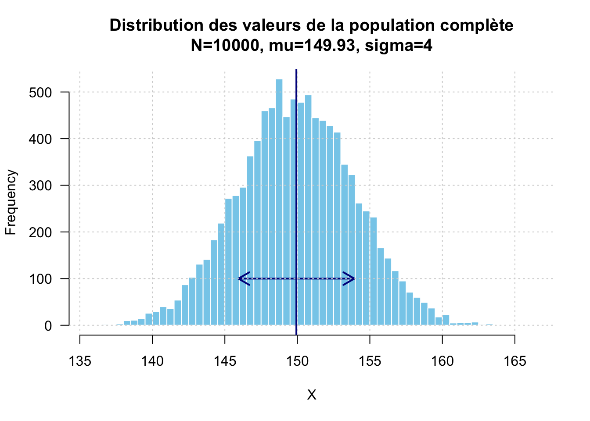
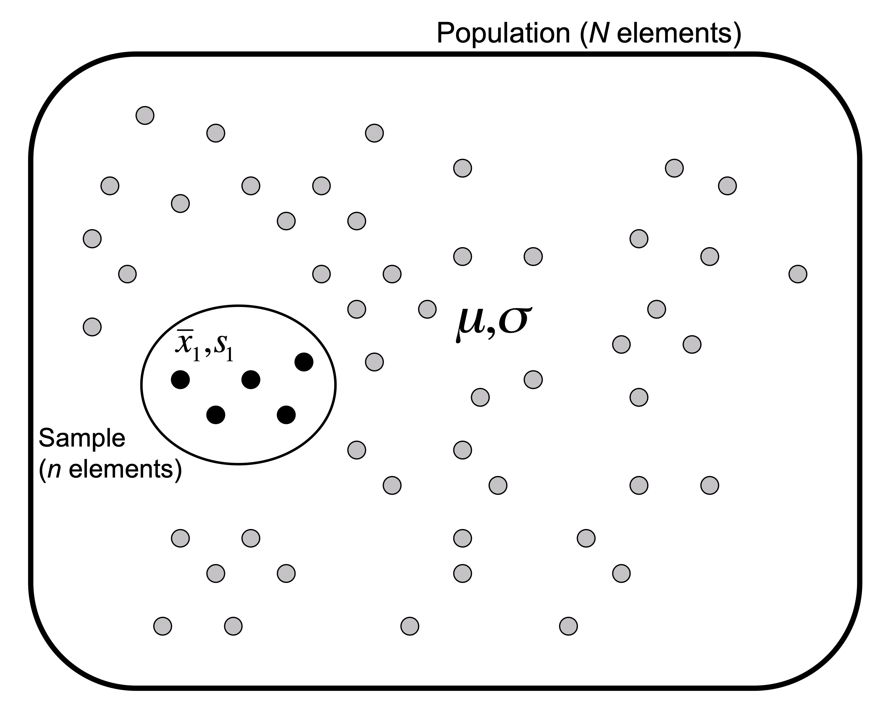
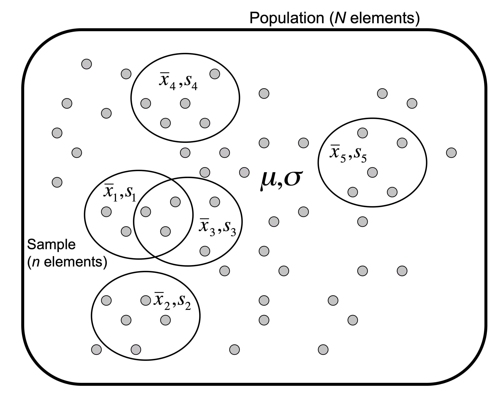
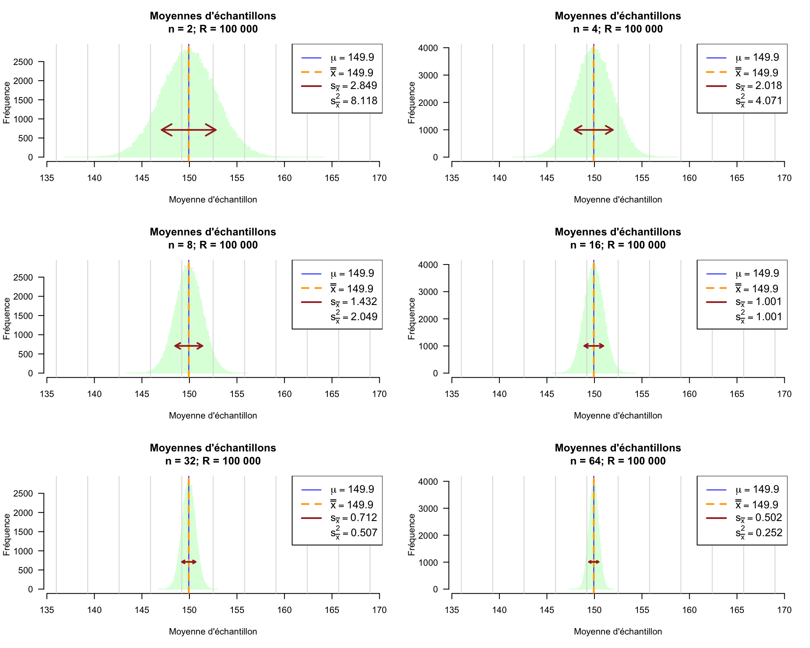
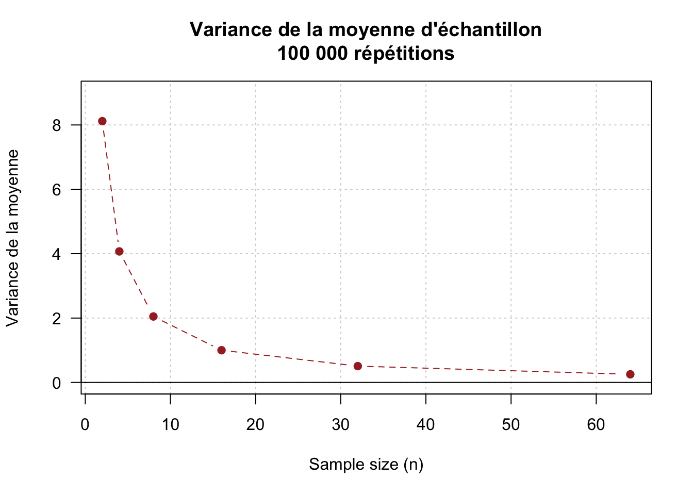
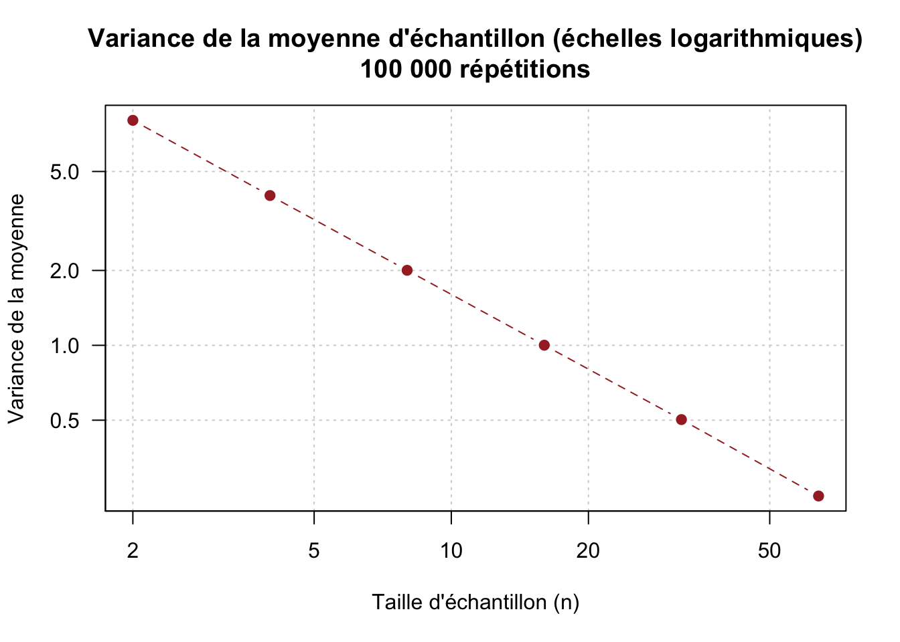
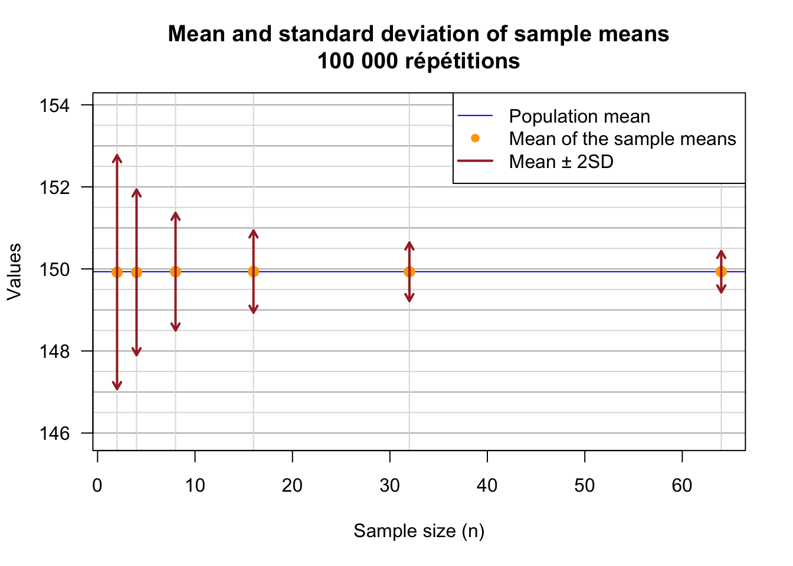

3 Des populations aux échantillons et retour : échantillonnage et estimation
3.1 Populations et échantillons
En statistique, on désigne par population l’ensemble des unités statistiques auxquelles on s’intéresse. Ces unités peuvent être des organismes, des patients, des prélèvements biologiques, des clones bactériens ou toute autre entité sur laquelle des observations peuvent être réalisées.
Voici quelques exemples de populations illustratives de la recherche en biologie :
- les êtres humains adultes actuellement vivants ;
- la population humaine adulte de Marseille ;
- les souris de laboratoire de la souche C57BL/6, fréquemment utilisée pour les études en immunologie ;
- les clones d’Escherichia coli qu’on pourrait obtenir par culture dans des conditions données ;
- les saupes de la baie de Marseille ;
- les sangliers des Calanques.
Pour chaque variable étudiée, on peut également considére la population dzs valeurs que cette variable prendrait sur l’ensemble des unités statistiques, par exemple : - le statut infecté ou non de chaque individu ; - la concentration d’hémoglobine dans le sang ; - la concentration d’un médicament dans le sang d’une souris de laboratoire.
Dans un monde idéal, on disposerait de mesures pour toutes les unités de la population, afin d’asseoir nos analyses sur des données qui reflètent la réalité dans son ensemble. Cependant, dans la majorité des cas, cette exhaustivité est impossible, pour différentes raisons. La population peut être infinie ou trop vaste, la collecte des données peut être coûteuse, ou encore la mesure nécessite une procédure invasive ou destructive
En pratique, on est donc amené à sélectionner un échantillon c’est-à-dire un sous-ensemble de la population. Le nombre d’unités qui le composent est dénommé effectif ou taille d’échantillon et sera noté \(n\) par la suite.
Une fois l’échantillon constitué, on réalise une ou plusieurs mesures sur chacun de ses unités. On obtient ainsi un ensemble de données d’observation ou expérimentales, qui peuvent ensuite être analysées selon différentes approches. Les méthodes de statistique descriptive servent à résumer ou à explorer les données obtenues (histogrammes, diagrammes en boîte, analyses en composantes principales, classification, etc.). Les méthodes de statistique inférentielle visent ensuite à tirer des conclusions concernant la population à partir des observations effectuées sur l’échantillon, notamment en estimant des paramètres de la population ou en testant des hypothèses.
3.2 Principe de l’échantillonnage
La Figure 3.1 illustre le principe du prélèvement d’un échantillon d’effectif \(n\) dans une population de taille \(N\). Le rectangle aux coins arrondis représente la population, tandis que les ellipses représentent des échantillons tirés dans celle-ci.


Dans un tirage aléatoire simple sans remise, tous les sous-ensembles possibles de \(n\) unités ont la même probabilité d’être sélectionnés. Ce type de tirage vise à éviter qu’une partie de la population soit systématiquement su- ou sous-représentée dans l’échantillon. Il faut par exemple éviter de biaiser le tirage en sélectionnant des individus liés par une proximité géographique, familiale, ou par tout autre facteur susceptible d’influencer les variables étudiées.
Dans de nombreuses études biologiques ou médicales, la collecte des échantillons est néanmoins conditionnés par des contraintes pratiques. Un échantillon pourrait par exemple être constitué de l’ensemble des patients souffrant d’une pathologie donnée et qui se sont présentés dans un hôpital donné pendant une période déterminée. Il s’agit alors d’un échantillon de convenance, susceptible de différer de la population cible et d’introduire des biais de sélection.
Le panneau de gauche (a) de la Figure 3.1 illustre le prélèvement d’un échantillon particulier au sein d’une population. Les symboles grecs désignent les paramètres de la population – la moyenne \(\mu\) et l’écart-type \(\sigma\) – tandis que les symboles latins désignent les statistiques calculées sur l’échantillon – sa moyenne \(\bar{x}\)1 et son écart-type \(s\).
Le panneau de droite (b) souligne une difficulté fondamentale : a priori, l’échantillon pourrait être constitué de n’importe quelle sous-ensemble de \(n\) unités parmi les \(N\) de la population. Chaque échantillon possède ses propres valeurs observées et conduit donc à une moyenne et un écart-type qui lui sont propres.
Le nombre d’échantillons distincts d’effectif \(n\) que l’on peut extraire sans remise d’une population de taille \(N\) est donnée par le coefficient binomial;
\[C = \binom{N}{n} = \frac{N!}{n!(N - n)!}\]
A titre d’exemple, dans une population de taille \(N=1000\) le nombre possible d’échantillons distincts d’effectif \(n=20\) s’élève à
\[C = \binom{1000}{20} \frac{N!}{20! \times 998!} \approx 3.4 \times 10^{41}\]
Il est donc impossile d’examiner exhaustivement tous les échantillons possibles, même quand la population est de taille relativement modeste.
3.3 Distributions d’échantillonnage
L’échantillon dont nous disposons n’est qu’un des nombreux échantillons qui auraient pu être prélevés dans la population. Les statistiques calculées sur cet échantillon auraient donc pu prendre d’autres valeurs si le tirage avait été différent. On peut dès lors se demander à quel point les mesures prises sur cet échantillon sont-elles représentatives de l’ensemble de la population. En théorie statistique, cette question est abordée par l’étude des distributions d’échantillonnage.
La distribution d’échantillonnage d’une statistique décrit les valeurs que cette statistique peut prendre lorsqu’on répète le prélèvement d’échantillons de même taille, selon le même plan d’échantillonnage.
Pour illustrer ce principe, nous générons une population artificielle de \(N\) = 10 000 individus. La Figure 3.2 représente la distribution des valeurs de la variable étudiée dans l’ensemble de cette population.
Puisque toutes lesmesures de cette population simulées sont connues, nous pouvons calculer directement sa moyenne (\(\mu\)), sa variance (\(\sigma^2\), et son écart-type (\(\sigma\)).
\[\mu = \frac{1}{N} \sum_{i=1}^N x_i = 149.9\]
\[\sigma^2 = \frac{1}{N} \sum_{i=1}^N (x_i - \mu)^2 = 16\]
\[\sigma = \sqrt{\sigma^2} = \sqrt{\frac{1}{N} \sum_{i=1}^N (x_i - \mu)^2} = 4\]
3.3.1 Effet de la taille d’échantillon sur la distribution d’échantillonnage de la moyenne
Nous voudrions évaluer la correspondance entre la moyenne de la population (\(\mu\)) et celle des échantillons prélevés aléatoirement dans cette population. Nous réalisons successivement cette expérience pour différentes tailles d’échantillons : \(n \in \{2, 4, 8, 16, 32, 64\}\).
Pour chaque taille d’échantillon \(n\), nous répétons le tirage \(R\) = 100 000 fois. Les \(R\) échantillons sont tirés indépendamment les uns des autres ; à l’intérieur de chaque échantillon, \(n\) individus sont sélectionnés sans remise.
Pour la répétition d’indice \(r\), nous calculons la moyenne :
\[\bar{x}^{(r)} = \frac{1}{n}\sum_{i=1}^n x_i^{(r)}, \qquad r = 1, \cdots, R\]
Dans cette équation, \(x_i^{(r)}\) désigne la valeur du \(i\)ème individu de la \(r\)!ème répétition. Nous obtenons donc au total \(R\) moyennes d’échantillon. L’ensemble de ces \(R\) valeurs de \(x^{(r)}\) forme une approximation empirique de la distribution d’échantillonnage de la moyenne.
Nous affichons le résultat sous forme d’un histogramme, qui nous permet d’appréhender la distribution de la moyenne d’échantillon.
Pour chaque taille d’échantillon \(n\), la Figure 3.3 représente la distribution des \(R\) moyennes d’échantillon. La ligne bleue indique la moyenne de la population, \(\mu\), et la ligne orange pointillée la moyenne des \(R\) moyennes d’échantillon – désignée par un symbole \(x\) surmonté d’une double barre \(\overline{\bar{x}}\)) – calculée ainsi :
\[\overline{\bar{x}} = \frac{1}{R} \sum_{r=1}^R \bar{x}^{(r)}\]
La flèche horizontale indique la dispersion autour de la moyenne des moyennes d’échantillon : elle s’étend d’un écart-type vers la gauche et d’un écart-type vers la droite, soit un intervalle total de deux écarts-types.

Un premier constat est que la moyenne d’échantillon est remarquablement stable : pour toutes les tailles d’échantillon, la moyenne des \(R\) = 100 000 moyennes d’échantillons (\(\overline{\bar{x}}\)) correspond toujours à la moyenne de la population (\(\mu\) = 149.9). En comparant les histogrammes, on remarque que la dispersion des valeurs diminue progressivement quand la taille de l’échantillon augmente.
La Table 3.1 synthétise les statistiques (moyenne, variance, écart-type) calculées sur l’ensemble des 100 000 moyennes d’échantillons, pour chacune des tailles d’échantillon que nous avons testées. Pour la comparaison, la première ligne rappelle les paramètres de la population.
Le tableau met en évidence une relation inverse entre la variance des moyennes d’échantillons (\(s^2_{\bar{x}}\)) et la taille de l’échantillon (\(n\)) : lorsque \(n\) est doublé, cette variance est approximativement divisée par deux.
| \(n\) | Moyenne | Variance | Écart-type | |
|---|---|---|---|---|
| Population | – | 149.9 | 16.00 | 4.00 |
| 2 | 2 | 149.9 | 8.03 | 2.83 |
| 4 | 4 | 149.9 | 4.00 | 2.00 |
| 8 | 8 | 149.9 | 2.00 | 1.42 |
| 16 | 16 | 149.9 | 1.00 | 1.00 |
| 32 | 32 | 149.9 | 0.50 | 0.71 |
| 64 | 64 | 149.9 | 0.25 | 0.50 |
Cette relation est également illustrée sur la Figure 3.4, avec des échelles linéaires (a) et logarithmiques (b).


La Figure 3.5 montre la relation entre la taille d’échantillon (\(n\)) et l’écart-type des moyennes d’échantillons (\(s_{\bar{x}}\)). La ligne bleur horizontale marque la moyenne de la population (\(\mu\)), les points oranges les moyennes des moyennes d’échantillons (100 000 échantillons par point). Les flèches rouges marquent un intervalle d’un écart-type des moyennes d’échantillons (\(s_{\bar{x}}\)) de part et d’autre de la moyenne (chaque flèche couvre donc 2 écarts-types).

Les écarts-types de moyennes d’échantillon diminuent en raison de la racine carrée de la taille d’échantillon. Ceci a une conséquence importante : si l’on désire doubler la précision de la moyenne d’échantillon, on doit multiplier par 4 la taille de l’échantillon, ce qui nécessite en pratique de quadrupler les coûts d’expérimentation ou de collecte des données.
3.3.2 Effet de la taille d’échantillon sur la distribution d’échantillonnage de la variance
3.4 Estimer les paramètres d’une population à partir d’un échantillon
3.5 Espérance
3.6 L’erreur standard
3.7 Intervalles de confiance autour de la moyenne
La barre au-dessus d’une variable dénote la moyenne des valeurs observées. ↩︎